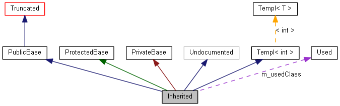

本页将向您解释如何理解由 doxygen 生成的图.
考虑如下例子:
/*! 由于截断而使 Invisible 不可见 */
class Invisible { };
/*! Truncated 的继承关系将被隐藏 */
class Truncated : public Invisible { };
/* 没有被doxygen文档化的类 */
class Undocumented { };
/*! public 继承关系的类 */
class PublicBase : public Truncated { };
/*! 一个模板类 */
template<class T> class Templ { };
/*! protected 继承关系的类 */
class ProtectedBase { };
/*! private 继承关系的类 */
class PrivateBase { };
/*! 被 Inherited 使用的类 */
class Used { };
/*! 继承自其它若干类的超级类 */
class Inherited : public PublicBase,
protected ProtectedBase,
private PrivateBase,
public Undocumented,
public Templ<int>
{
private:
Used *m_usedClass;
};
结果将会生成以下图:

上图中的矩形有如下意义:
-
灰色填充的矩形 表示上图是由该结构体或类生成.
-
黑色边框的矩形 表示已经被文档化的结构体或类.
-
灰色边框的矩形 表示未被文档化的结构体或类.
-
红色边框的矩形 表示该结构体或类的关系没有被完全显示.如果生成的图不能调整到制定的尺寸，有一些关系就会被截断而不显示出来.
箭头有如下意义:
-
深蓝色的箭头被用于展示 public 的继承关系.
-
深绿色的箭头表示 protected 的继承关系.
-
深红色的箭头说明了是 privated 的继承关系.
-
紫色虚线箭头用来表示两个类之间的聚合关系. 被箭头指向的类的类型的变量,可以通过箭头旁标明的变量去访问.
-
黄色虚线箭头表示模板类实例和模板类之间的关系. 箭头旁边标明了模板类实例化的参数.